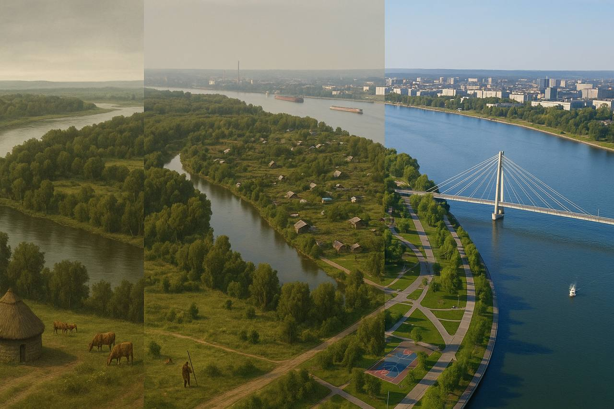

Tatyshev Island is named after Prince Tatysh, a representative of the local Turkic tribe who lived in these places before the arrival of Russian settlers. In the 17th century, the island was used as a pasture and hunting grounds.
The Soviet period and developmentIn the 20th century, the island remained undeveloped for a long time. In the 1970s and 1980s, suburban areas were located here, as well as agricultural work. In the 1980s, the first attempts at landscaping began, but no large-scale development took place.
Modern history: the creation of the park2006 — Krasnoyarsk City Hall announced plans to create a large recreational park on Tatyshev Island.
2010 — active landscaping began: construction of bike paths, pedestrian zones, and sports fields.
2012 — a cable-stayed bridge (pedestrian and bicycle) was opened, connecting the island with the right bank of Krasnoyarsk.
2014 — the park was officially opened to the public.
